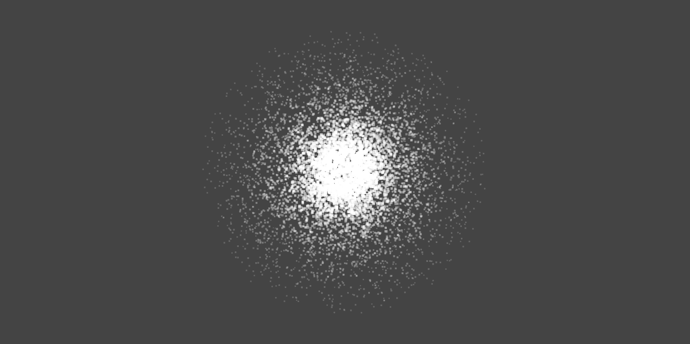
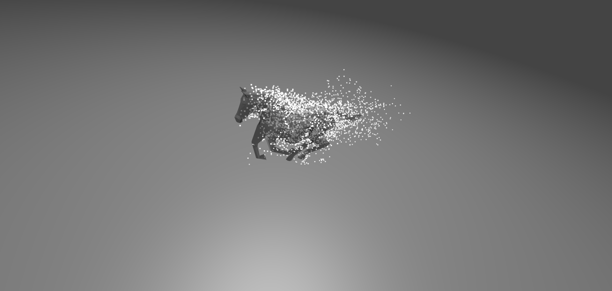
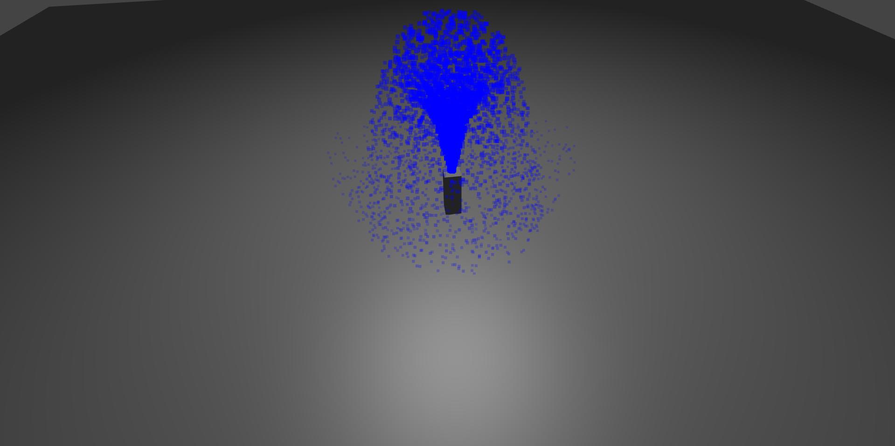
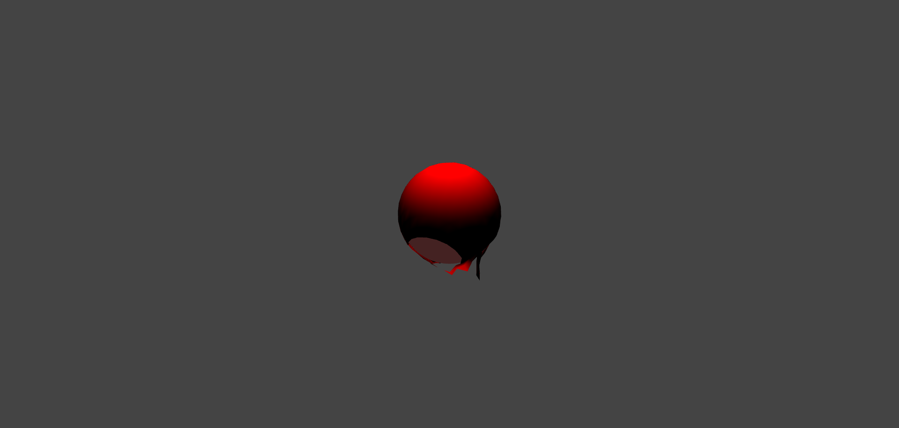
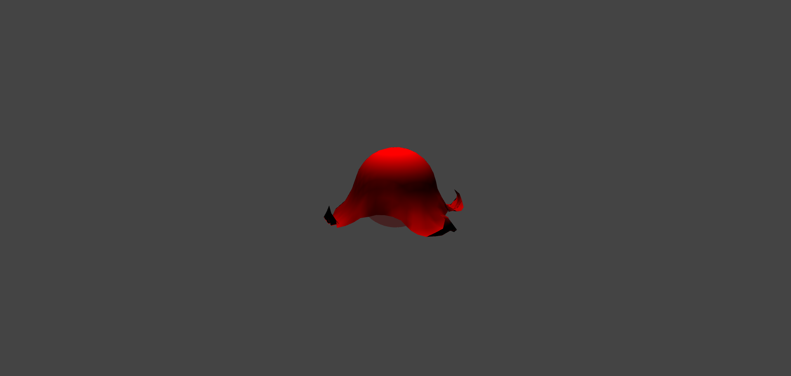
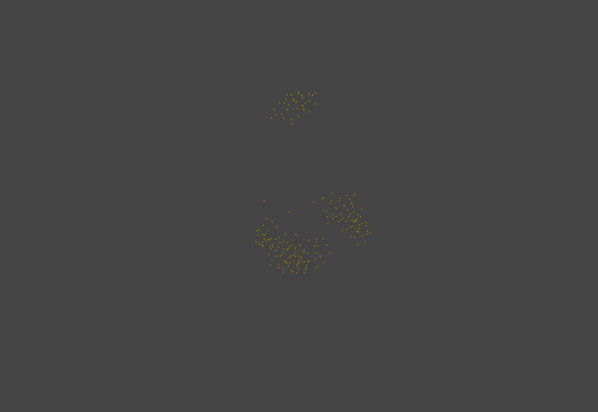
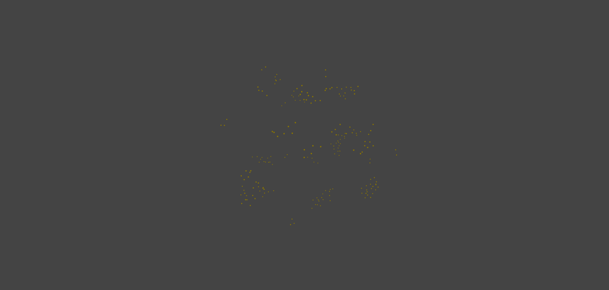

COS426 Assignment 4Animation — Writeup
- (1.0) Euler
- (1.0) Sphere source
- (1.0) Animated mesh
- (1.0) Damping
- (1.0) Uniform distribution
- (1.0) Ground plane
- (1.0) Sphere collision
- (2.0) Spring system
- (3.0) Your system
- (1.0) Rendering
- (1.0) Art
Euler
I computed the change in velocity (dvdt) by adding together the forces (gravity, attractors,
damping) and then I updated the velocity by multipying by delta_t.
Sphere source
I sampled from the surface of the unit sphere by sampling in the unit cube, rejecting points outside the sphere, and then normalizing to the surface of the sphere. This is the position. I set the velocity to be proportional to the position, plus the base velocity.
Sphere source in basic system:

Animated mesh
I sampled uniformly among the faces of the mesh, then sampled uniformly inside each triangular face (based on section 4.2 of http://www.cs.princeton.edu/~funk/tog02.pdf). I initialized the velocities to the base velocity plus a random vector with length 5.0.
Animated mesh:

Damping
I added to the velocity change dvdt terms proportional to the velocity and velocity squared,
with proportionality constants given by the x and y components of the dampenings vector.
Uniform distribution
I changed the face sampling of the animated mesh so that the probability of choosing a face is proportional to its area. I first computed the areas of all the faces, made a cumulative mass function, then sampled uniformly from 0 to the total area, and used the CMF to choose the face. The rest of the position initialization is the same.
Ground plane
To detect collisions, I took the dot product between the plane normal vector and the position and compared it
to the offset of the plane from the origin. For the sink, I simply used killParticle to kill
the particle. For the bounce plane, I decomposed the velocity into normal and tangential velocities and
reversed the normal velocity, multiplying by some damping factor. Then, I ensured that the position was above
the plane (plus epsilon) so that re-collision would not be detected on the next step.
Fountain with bounce plane:

Sphere collision
To detect collisions, I compared the distance from the center to the position with the radius. Then, similar
to with planes, I used killParticle for the sink and reversed the normal velocity with the
damping factor for the bounce sphere. Finally, I ensured that the position was outside the radius (plus
epsilon) so that collisions to avoid re-collision.
Spring system
First, I implemented a function to compute the force due to a spring in calcHooke. This implements
a Hooke force modulated by a damping force based on the relative velocity. Then, I computed dvdt
as before with gravity, attractors, and Hooke forces between neighbors using calcHooke, and used
that to update velocities.
Cloth:


Your system
I implemented a bird flocking simulation based on the active particle model analyzed in this biophysics paper by Bialek et al. (2012): http://www.pnas.org/content/109/13/4786. Instead of updating velocities based on force calculations, this model updates velocities directly and requires all velocities to be the same in magnitude.
There are three contributions to the velocity: (1) a distance-independent tendency to tend toward the
mean of neighboring birds (the number of neighbors, FlockUpdater.n_neighbors, can be set on
creation), (2) a distance-dependent contribution that pushes neighboring birds closer together but does not
permit them to become closer than a minimum distance, and (3) a stochastic random component.
This produces flocking behavior with high pairwise correlations for larger values of n_neighbors
but these long-distance correlations are destroyed when n_neighbors is smaller (e.g.
n_neighbors = 1). It is interesting to re-run the simulation with differing values of this
parameter, and observe the critical point / transition point dynamics in the tendency of the birds to flock.
Flocking with 3 neighbors:

Flocking with 5 neighbors:

Rendering
I multiplied both the color alpha channel and the size of the particle by some factor on each step such that
the alpha and size decayed exponentially with some timescale (ideally independent of delta_t).
Art
I made the birds change color based on how close the neighbors are (i.e how "happy" they are). Based on the average distance between neighbors being considered, the color of each bird interpolates between red (far, because they're "unhappy") and yellow (near, because they're "happier"). This makes the birds look a little bit like fireflies in the way that they swarm together and are each differently colored.
Flocking with 1 neighbor:
